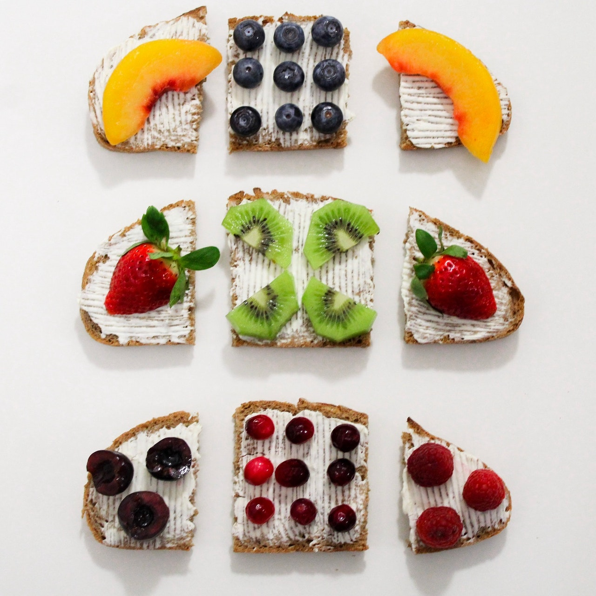

all about fruits
When looking at the typical breakfast food offerings at many restaurants, supermarkets, and local breakfast bars, it seems like a good idea at the time, but later prove to be a tiresome workout for our bodies.
The difficulty is keeping things interesting and finding alternative ways to get the much needed nutrients to keep us in tip top form for the day ahead.
Let's admit though, the meals on display do look tasty. There's more where that came from...
Fruit Meals
